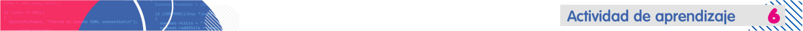

Implementa controladores en la interfaz
Acciones de aprendizaje
1. Aprende de diferentes controladores en Java:
- Botones con XACA RANA. (2021). 41 - Curso Programación JAVA - JButton. [Video]
- Mensajes de alerta con XACA RANA. (2021). 42 - Curso Programación JAVA - JOptionPane. [Video]
- Campos de texto con XACA RANA. (2021). 43 - Curso Programación JAVA - JLabel, JTextField, JPassowrd. [Video]
- Panel con XACA RANA. (2021). 44 - Curso Programación JAVA - JPanel. [Video]
- Boton radio y check con XACA RANA. (2021). 45 - Curso Programación JAVA - JRadioButton y JCheckBox. [Video]
- Combo box con XACA RANA. (2021). 46 - Curso Programación JAVA - JComboBox. [Video]
- Menú con XACA RANA. (2021). 47 - Curso Programación JAVA - JMenu. [Video]
2. Implementa los controles vistos en la acción anterior, a la interfaz que se empezó a diseñar en la actividad 5.
3. Termina el diseño de la interfaz y agregua los controladores que permitan simular el registro de un usuario usando un ArrayList y luego autentique al usuario usando la venta login teniendo en cuenta la información del registro. Cuando el usuario esta logueado, muestre el panel de administración de las mesas del bar.
4. Realiza un video, donde se evidencie la navegación entre pantallas, la interacción de registro y login y por último las funcionalidades básicas del administrador de mesas.
5. Sube el video a una plataforma como YouTube, Drive o OneDrive y publique el enlace en el foro: Interfaz con controladores. Recuerda poner los permisos de acceso adecuados para que cualquier persona con el enlace pueda ver el video.
6. Recuerda realizar la entrega del Reto 4.
Formas de trabajo
-
Individual: el estudiante es responsable de su proceso de aprendizaje y de las actividades que realiza.
Tiempos (Semana 5)
- Trabajo autónomo del estudiante: 12 horas.
- Acompañamiento docente: 4 horas.
Evaluación formativa:
Realiza un video, donde se evidencie la navegación entre pantallas, la interacción de registro y login